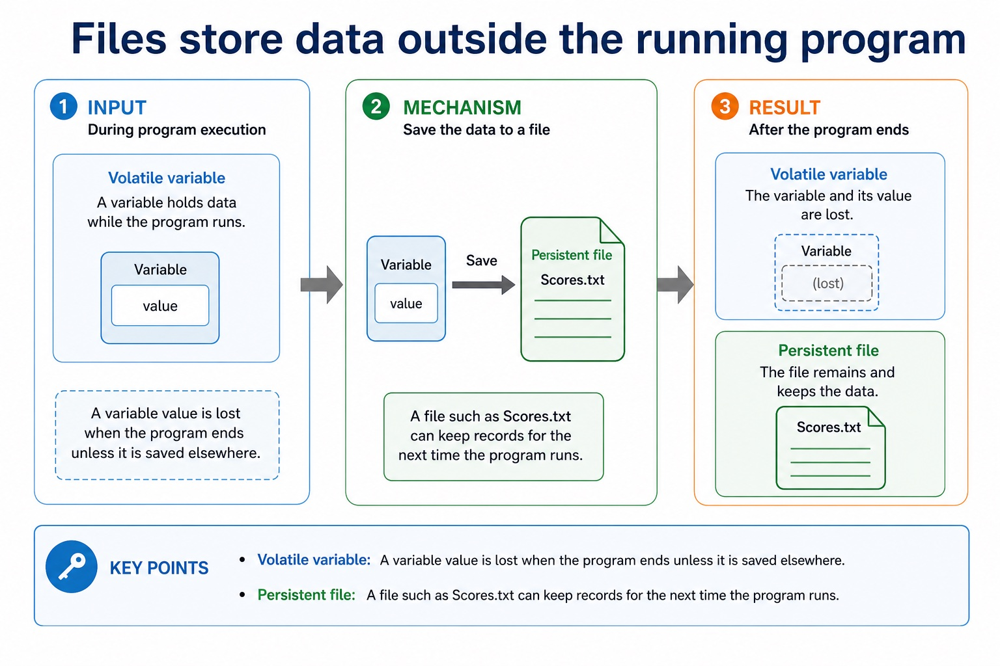
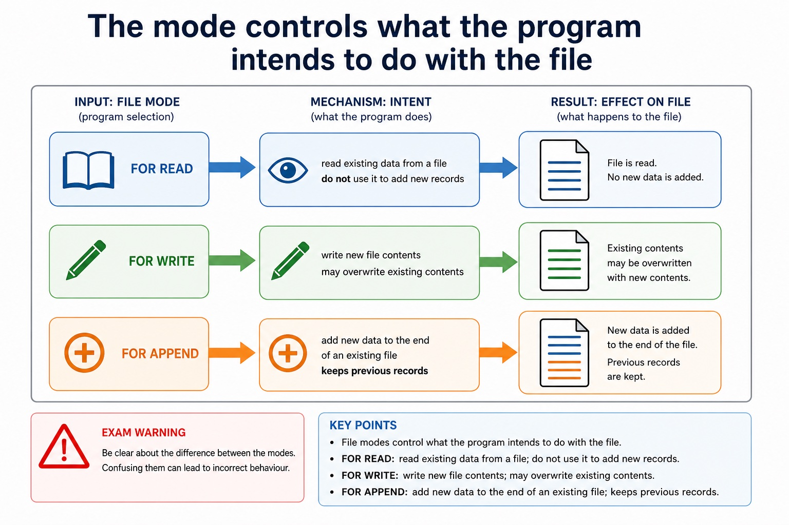
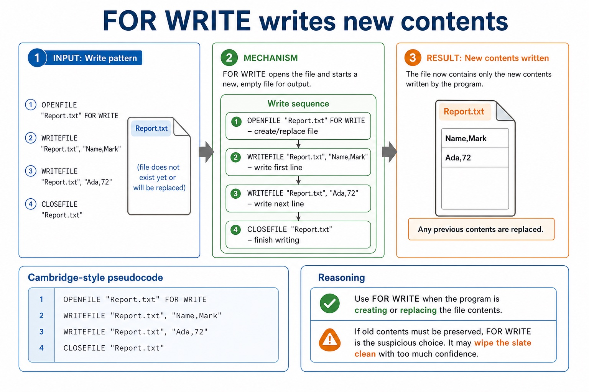
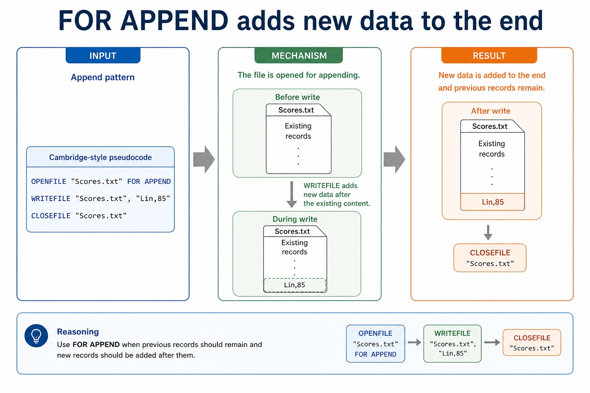
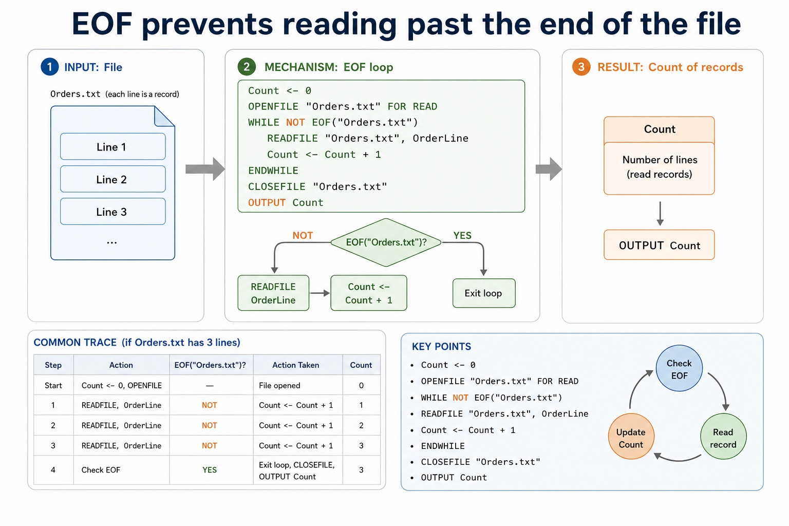
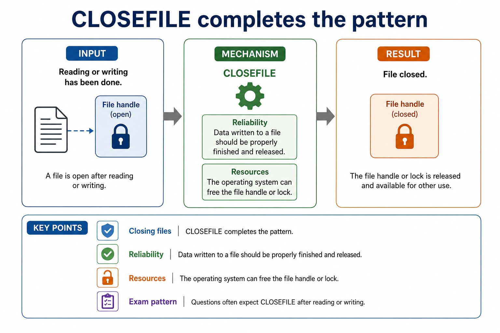
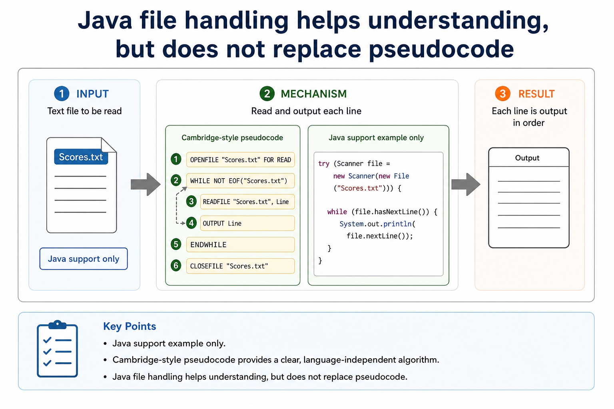

Open the file. Use the file. Close the file. The file is not a mind reader.
File handling lets a program store data between runs. Cambridge-style pseudocode uses commands such as
OPENFILE, READFILE, WRITEFILE, EOF and
CLOSEFILE. The pattern matters: choose the correct mode, process the file safely, then close it.
ChooseREAD, WRITE or APPEND based on the scenario
WriteCambridge-style file handling patterns with EOF and CLOSEFILE
Separateexam pseudocode from Java file handling syntax
OPENFILEchoose modeREAD / WRITE / APPEND
READFILE / WRITEFILEprocess dataline by line or record by record
CLOSEFILEfinish safelyrelease the file
Skipping CLOSEFILE is like leaving the classroom door open and hoping the exam board finds it charming.
Why this matters
Paper 2 file questions reward the pattern: open in the correct mode, loop until EOF when reading, process records, then close.
Common trap
WRITE may overwrite existing contents. Use APPEND when new data must be added to the end.
Warm-up hook
Which file mode keeps old scores and adds a new score?
The file already contains previous scores. The program must add one more line without deleting the old data.
Choose the mode for adding to the end of an existing file.
Purpose
Files store data outside the running program
Chinese support: file 文件, record 记录, read 读取, write 写入, append 追加, end of file 文件末尾。
Volatile variable
A variable value is lost when the program ends unless it is saved elsewhere.
Persistent file
A file such as Scores.txt can keep records for the next time the program runs.
Files store data outside the running program

Files store data outside the running program: source-grounded visual explanation.
Lesson fact: Volatile variable
Lesson fact: A variable value is lost when the program ends unless it is saved elsewhere.
Lesson fact: Persistent file
Lesson fact: A file such as Scores.txt can keep records for the next time the program runs.
File modes
The mode controls what the program intends to do with the file
Mode
Use
Exam warning
FOR READ
read existing data from a file
do not use it to add new records
FOR WRITE
write new file contents
may overwrite existing contents
FOR APPEND
add new data to the end of an existing file
keeps previous records
The mode controls what the program intends to do with the file

The mode controls what the program intends to do with the file: source-grounded visual explanation.
Lesson fact: File modes
Lesson fact: Exam warning
Lesson fact: FOR READ
Lesson fact: read existing data from a file
Lesson fact: do not use it to add new records
Lesson fact: FOR WRITE
Lesson fact: write new file contents
Lesson fact: may overwrite existing contents
Lesson fact: FOR APPEND
Lesson fact: add new data to the end of an existing file
Lesson fact: keeps previous records
Read pattern
Read every line using WHILE NOT EOF
Cambridge-style pseudocode
OPENFILE "Scores.txt" FOR READ
WHILE NOT EOF("Scores.txt")
READFILE "Scores.txt", Line
OUTPUT Line
ENDWHILE
CLOSEFILE "Scores.txt"
Trace idea
Openprepare Scores.txt for reading
EOF checkcontinue while records remain
Readstore one line in Line
Closerelease the file after the loop
Read every line using WHILE NOT EOF
Read every line using WHILE NOT EOF: source-grounded visual explanation.
Lesson fact: Read pattern
Lesson fact: Cambridge-style pseudocode
Lesson fact: OPENFILE "Scores.txt" FOR READ
Lesson fact: WHILE NOT EOF("Scores.txt")
Lesson fact: READFILE "Scores.txt", Line
Lesson fact: OUTPUT Line
Lesson fact: ENDWHILE
Lesson fact: CLOSEFILE "Scores.txt"
Lesson fact: Trace idea
Lesson fact: Open prepare Scores.txt for reading
Lesson fact: EOF check continue while records remain
Use FOR WRITE when the program is creating or replacing the file contents.
If old contents must be preserved, FOR WRITE is the suspicious choice. It may wipe the slate clean with too much confidence.
FOR WRITE writes new contents

FOR WRITE writes new contents: source-grounded visual explanation.
Lesson fact: Write pattern
Lesson fact: Cambridge-style pseudocode
Lesson fact: OPENFILE "Report.txt" FOR WRITE
Lesson fact: WRITEFILE "Report.txt", "Name,Mark"
Lesson fact: WRITEFILE "Report.txt", "Ada,72"
Lesson fact: CLOSEFILE "Report.txt"
Lesson fact: Reasoning
Lesson fact: Use FOR WRITE when the program is creating or replacing the file contents.
Lesson fact: If old contents must be preserved, FOR WRITE is the suspicious choice. It may wipe the slate clean with too much confidence.
Append pattern
FOR APPEND adds new data to the end
Cambridge-style pseudocode
OPENFILE "Scores.txt" FOR APPEND
WRITEFILE "Scores.txt", "Lin,85"
CLOSEFILE "Scores.txt"
Reasoning
Use FOR APPEND when previous records should remain and new records should be added after them.
Ada,72
Lin,85
FOR APPEND adds new data to the end

FOR APPEND adds new data to the end: source-grounded visual explanation.
Lesson fact: Append pattern
Lesson fact: Cambridge-style pseudocode
Lesson fact: OPENFILE "Scores.txt" FOR APPEND
Lesson fact: WRITEFILE "Scores.txt", "Lin,85"
Lesson fact: CLOSEFILE "Scores.txt"
Lesson fact: Reasoning
Lesson fact: Use FOR APPEND when previous records should remain and new records should be added after them.
EOF loop
EOF prevents reading past the end of the file
Count records
Count <- 0
OPENFILE "Orders.txt" FOR READ
WHILE NOT EOF("Orders.txt")
READFILE "Orders.txt", OrderLine
Count <- Count + 1
ENDWHILE
CLOSEFILE "Orders.txt"
OUTPUT Count
Common trace
If Orders.txt has 3 lines, the loop runs 3 times and Count becomes 3.
Do not put READFILE after the EOF check has already failed.
EOF prevents reading past the end of the file

EOF prevents reading past the end of the file: source-grounded visual explanation.
Lesson fact: EOF loop
Lesson fact: Count records
Lesson fact: Count <- 0
Lesson fact: OPENFILE "Orders.txt" FOR READ
Lesson fact: WHILE NOT EOF("Orders.txt")
Lesson fact: READFILE "Orders.txt", OrderLine
Lesson fact: Count <- Count + 1
Lesson fact: ENDWHILE
Lesson fact: CLOSEFILE "Orders.txt"
Lesson fact: OUTPUT Count
Lesson fact: Common trace
Lesson fact: If Orders.txt has 3 lines, the loop runs 3 times and Count becomes 3 .
Closing files
CLOSEFILE completes the pattern
ReliabilityData written to a file should be properly finished and released.ResourcesThe operating system can free the file handle or lock.Exam patternQuestions often expect CLOSEFILE after reading or writing.
CLOSEFILE completes the pattern

CLOSEFILE completes the pattern: source-grounded visual explanation.
Lesson fact: Closing files
Lesson fact: Reliability Data written to a file should be properly finished and released.
Lesson fact: Resources The operating system can free the file handle or lock.
Lesson fact: Exam pattern Questions often expect CLOSEFILE after reading or writing.
Java support only
Java file handling helps understanding, but does not replace pseudocode
Cambridge-style pseudocode
OPENFILE "Scores.txt" FOR READ
WHILE NOT EOF("Scores.txt")
READFILE "Scores.txt", Line
OUTPUT Line
ENDWHILE
CLOSEFILE "Scores.txt"
Java support example only
try (Scanner file = new Scanner(new File("Scores.txt"))) {
while (file.hasNextLine()) {
System.out.println(file.nextLine());
}
}
Do not use Scanner, braces or hasNextLine() as a Cambridge pseudocode answer.
Java file handling helps understanding, but does not replace pseudocode

Java file handling helps understanding, but does not replace pseudocode: source-grounded visual explanation.
Lesson fact: Java support only
Lesson fact: Cambridge-style pseudocode
Lesson fact: OPENFILE "Scores.txt" FOR READ
Lesson fact: WHILE NOT EOF("Scores.txt")
Lesson fact: READFILE "Scores.txt", Line
Lesson fact: OUTPUT Line
Lesson fact: ENDWHILE
Lesson fact: CLOSEFILE "Scores.txt"
Lesson fact: Java support example only
Lesson fact: try (Scanner file = new Scanner(new File("Scores.txt"))) {
Lesson fact: while (file.hasNextLine()) {
Lesson fact: System.out.println(file.nextLine());
Interactive pattern builder
Generate the core file pattern
Choose a task and compare the pattern. This is a scaffold, not a replacement for understanding.
Choose a task and build the pattern.
Mode chooser
Which mode should the program use?
Select a scenario to see the mode and exam reasoning.
Pick a scenario.
Worked examples
Trace the file operation pattern
Practice with instant checking
Short answers, exact commands
Type the mode, command or final trace value.
Mistake debugging
Find the file handling error
Exam-style questions
Answer first, then expand the MS
Questions are original Cambridge-style practice. MS notes are strict about mode, EOF and close-file steps.
Summary
Three rules to keep
Mode firstREAD, WRITE and APPEND mean different things.
EOF loopUse WHILE NOT EOF when reading all records.
CloseFinish the pattern with CLOSEFILE.
Homework
Read, write, append
Write Cambridge-style pseudocode to read every line from Names.txt and output it.
Write pseudocode to count records in Orders.txt and output the count.
Write pseudocode to append "Ada,72" to Scores.txt without deleting existing records.
Answer a 4-mark question explaining why Java Scanner syntax should not replace Cambridge file pseudocode.
Marking focus: use the correct file mode, include the file command sequence, and close the file.